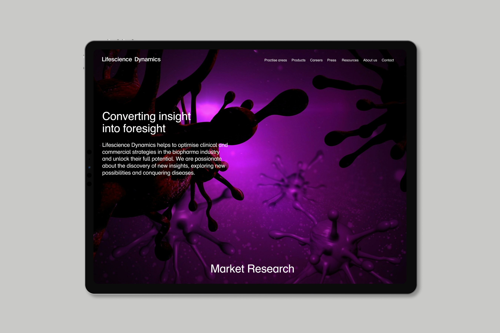
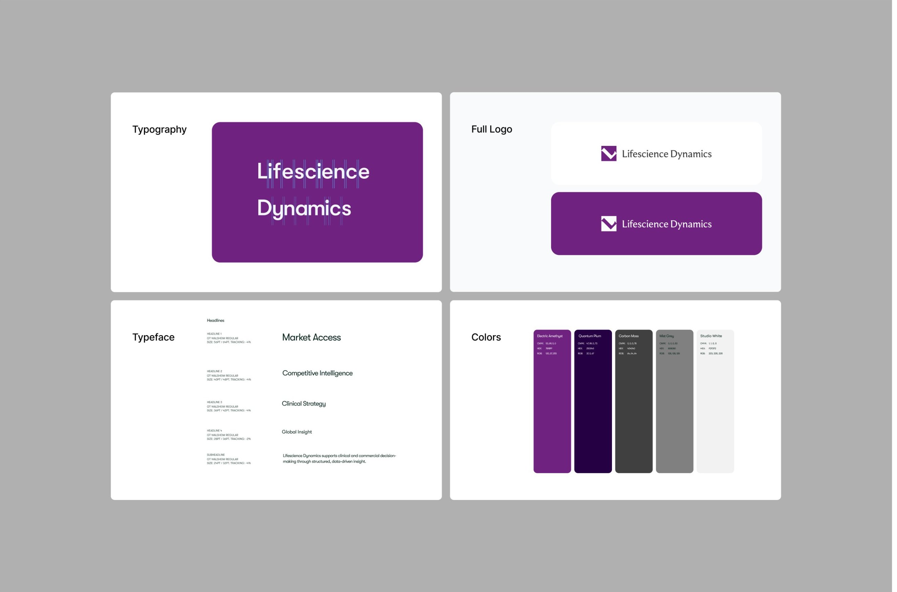
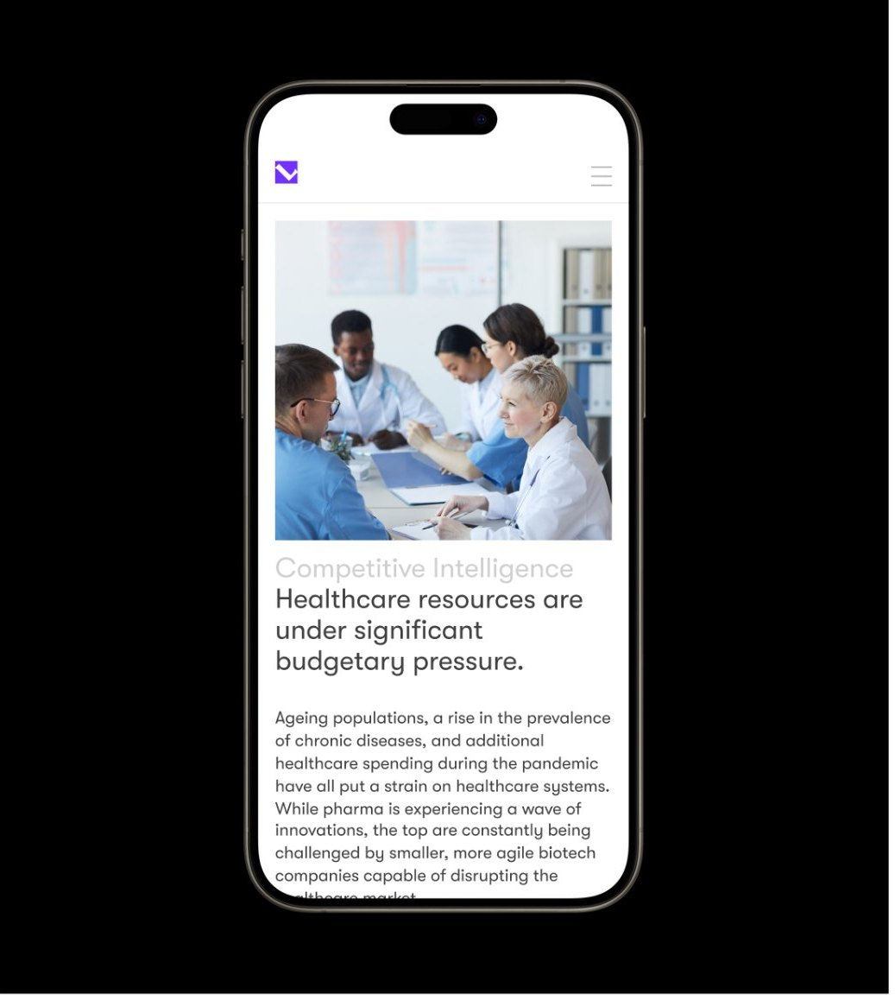
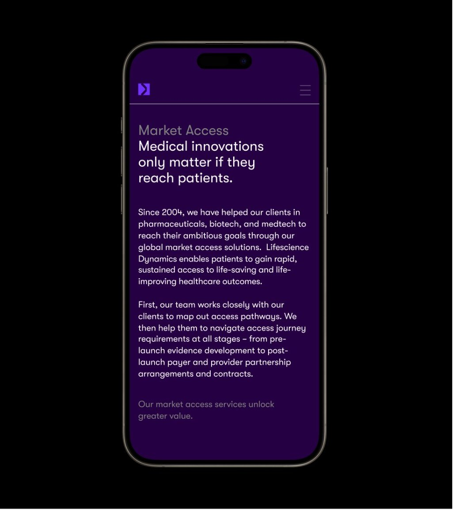
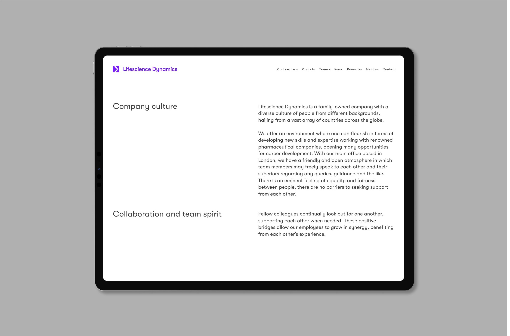

Lifescience Dynamics
Lifescience Dynamics helps biopharma companies turn insight into foresight, from market research and competitive intelligence to market access. But a consultancy whose work is complex has to look simple, or clients never get past the first page. This proposal rethinks the brand and the website around that idea: one clear message at the top, and every service explained in plain, scannable language.
The design pairs a bold purple hero and deep purple pages with calm white ones, a clear type hierarchy where a short statement leads and the detail follows, and a 12-column grid that holds the desktop, tablet and mobile layouts together. Even dense content, like the list of medical conferences, becomes a clean table that stays easy to read on a phone.



